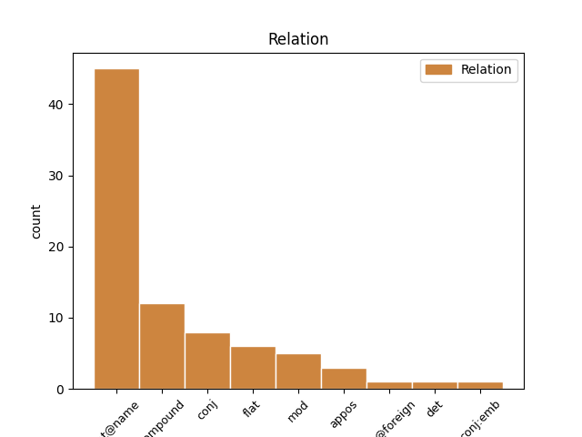
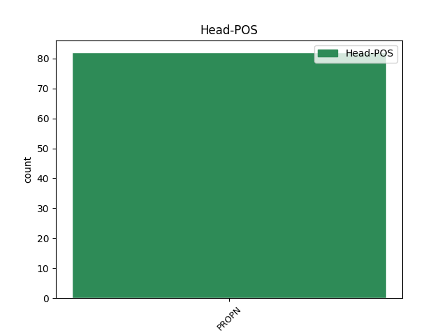
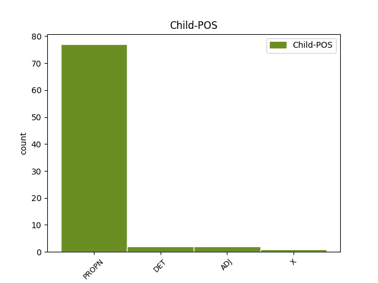

Distribution of features within this leaf



Agreement Rules sorted by frequency.
When the head token is PROPN and the dependent token is PROPN.
1 Ymosododd _ _ _ _ 0 _ _ _
2 Ghengis Ghengis PROPN _ Case=NomAcc|Gender=Masc|Number=Sing 0 _ _ _
3 Khan Khan PROPN _ Case=NomAcc|Gender=Masc|Number=Sing 2 flat@name _ _
4 ar _ _ _ _ 0 _ _ _
5 Hsi _ _ _ _ 0 _ _ _
6 - _ _ _ _ 0 _ _ _
7 hsia _ _ _ _ 0 _ _ _
8 neu _ _ _ _ 0 _ _ _
9 Xixia _ _ _ _ 0 _ _ _
10 . _ _ _ _ 0 _ _ _
When the head token is PROPN and the dependent token is ADJ.
1 Mae _ _ _ _ 0 _ _ _
2 Pearl _ _ _ _ 0 _ _ _
3 Harbour _ _ _ _ 0 _ _ _
4 yn _ _ _ _ 0 _ _ _
5 harbwr _ _ _ _ 0 _ _ _
6 yn _ _ _ _ 0 _ _ _
7 Hawaii _ _ _ _ 0 _ _ _
8 a _ _ _ _ 0 _ _ _
9 cheir _ _ _ _ 0 _ _ _
10 yno _ _ _ _ 0 _ _ _
11 safle _ _ _ _ 0 _ _ _
12 llyngesol _ _ _ _ 0 _ _ _
13 yr _ _ _ _ 0 _ _ _
14 Unol _ PROPN _ Case=NomAcc|Definite=Def|Gender=Fem|Number=Sing 0 _ _ _
15 Daleithiau daleithia ADJ _ Case=NomAcc|Definite=Def|Gender=Fem|Number=Sing 14 compound _ _
16 . _ _ _ _ 0 _ _ _
When the head token is PROPN and the dependent token is DET.
1 Y _ _ _ _ 0 _ _ _
2 geiriau _ _ _ _ 0 _ _ _
3 Wir _ _ _ _ 0 _ _ _
4 fahren _ _ _ _ 0 _ _ _
5 fahren _ _ _ _ 0 _ _ _
6 fahren _ _ _ _ 0 _ _ _
7 auf _ _ _ _ 0 _ _ _
8 der der DET _ Case=Dat|Definite=Def|Gender=Fem|Number=Sing|PronType=Art 9 mod _ _
9 Autobahn Autobahn PROPN _ Case=Dat|Gender=Fem|Number=Sing 0 _ _ _
10 ( _ _ _ _ 0 _ _ _
11 Awn _ _ _ _ 0 _ _ _
12 awn _ _ _ _ 0 _ _ _
13 awn _ _ _ _ 0 _ _ _
14 ar _ _ _ _ 0 _ _ _
15 y _ _ _ _ 0 _ _ _
16 Draffordd _ _ _ _ 0 _ _ _
17 ) _ _ _ _ 0 _ _ _
18 yn _ _ _ _ 0 _ _ _
19 debyg _ _ _ _ 0 _ _ _
20 i _ _ _ _ 0 _ _ _
21 gân _ _ _ _ 0 _ _ _
22 y _ _ _ _ 0 _ _ _
23 Beach _ _ _ _ 0 _ _ _
24 Boys _ _ _ _ 0 _ _ _
25 Fun _ _ _ _ 0 _ _ _
26 , _ _ _ _ 0 _ _ _
27 Fun _ _ _ _ 0 _ _ _
28 , _ _ _ _ 0 _ _ _
29 Fun _ _ _ _ 0 _ _ _
30 sydd _ _ _ _ 0 _ _ _
31 hefyd _ _ _ _ 0 _ _ _
32 am _ _ _ _ 0 _ _ _
33 yrru _ _ _ _ 0 _ _ _
34 . _ _ _ _ 0 _ _ _
When the head token is PROPN and the dependent token is X.
1 Ymhlith _ _ _ _ 0 _ _ _
2 y _ _ _ _ 0 _ _ _
3 lluniau _ _ _ _ 0 _ _ _
4 a _ _ _ _ 0 _ _ _
5 greodd _ _ _ _ 0 _ _ _
6 ar _ _ _ _ 0 _ _ _
7 y _ _ _ _ 0 _ _ _
8 cyd _ _ _ _ 0 _ _ _
9 â _ _ _ _ 0 _ _ _
10 Hunt _ _ _ _ 0 _ _ _
11 y _ _ _ _ 0 _ _ _
12 mae _ _ _ _ 0 _ _ _
13 The _ _ _ _ 0 _ _ _
14 Light _ _ _ _ 0 _ _ _
15 of _ _ _ _ 0 _ _ _
16 the _ _ _ _ 0 _ _ _
17 World _ _ _ _ 0 _ _ _
18 a _ _ _ _ 0 _ _ _
19 The _ _ _ _ 0 _ _ _
20 Lady Lady PROPN _ Case=NomAcc|Gender=Masc|Number=Sing 0 _ _ _
21 of of X _ Case=NomAcc|Gender=Masc|Number=Sing 20 flat@name _ _
22 Shalott _ _ _ _ 0 _ _ _
23 . _ _ _ _ 0 _ _ _
Disagree Examples:
1 Llun _ _ _ _ 0 _ _ _
2 gan _ _ _ _ 0 _ _ _
3 Llinos Llinos PROPN _ Case=Gen|Gender=Fem|Number=Sing 0 _ _ _
4 Lanini Lanini PROPN _ Case=Gen|Gender=Masc|Number=Sing 3 flat@name _ _
5 ( _ _ _ _ 0 _ _ _
6 www _ _ _ _ 0 _ _ _
7 . _ _ _ _ 0 _ _ _
1 Roedd _ _ _ _ 0 _ _ _
2 Rhode _ _ _ _ 0 _ _ _
3 Island _ _ _ _ 0 _ _ _
4 yn _ _ _ _ 0 _ _ _
5 un _ _ _ _ 0 _ _ _
6 o _ _ _ _ 0 _ _ _
7 13 _ _ _ _ 0 _ _ _
8 talaith _ _ _ _ 0 _ _ _
9 gwreiddiol _ _ _ _ 0 _ _ _
10 yr _ _ _ _ 0 _ _ _
11 Unol _ PROPN _ Case=NomAcc|Definite=Def|Gender=Fem|Number=Sing 0 _ _ _
12 Daleithiau daleithia PROPN _ Case=Gen|Gender=Masc|Number=Sing 11 compound _ _
13 a'r _ _ _ _ 0 _ _ _
14 gyntaf _ _ _ _ 0 _ _ _
15 i _ _ _ _ 0 _ _ _
16 ddatgan _ _ _ _ 0 _ _ _
17 ei _ _ _ _ 0 _ _ _
18 hannibyniaeth _ _ _ _ 0 _ _ _
19 ar _ _ _ _ 0 _ _ _
20 Brydain _ _ _ _ 0 _ _ _
21 . _ _ _ _ 0 _ _ _
1 Yn _ _ _ _ 0 _ _ _
2 2009 _ _ _ _ 0 _ _ _
3 cyhoeddodd _ _ _ _ 0 _ _ _
4 Canolfan _ _ _ _ 0 _ _ _
5 Brookings _ _ _ _ 0 _ _ _
6 fod _ _ _ _ 0 _ _ _
7 ymosodiadau _ _ _ _ 0 _ _ _
8 drôns _ _ _ _ 0 _ _ _
9 yr _ _ _ _ 0 _ _ _
10 Unol _ PROPN _ Case=NomAcc|Definite=Def|Gender=Fem|Number=Sing 0 _ _ _
11 Daleithiau _ PROPN _ Case=Gen|Gender=Masc|Number=Sing 10 compound _ _
12 ym _ _ _ _ 0 _ _ _
13 Mhacistan _ _ _ _ 0 _ _ _
14 - _ _ _ _ 0 _ _ _
15 ar _ _ _ _ 0 _ _ _
16 gyfartaledd _ _ _ _ 0 _ _ _
17 - _ _ _ _ 0 _ _ _
18 yn _ _ _ _ 0 _ _ _
19 lladd _ _ _ _ 0 _ _ _
20 deg _ _ _ _ 0 _ _ _
21 o _ _ _ _ 0 _ _ _
22 sifiliad _ _ _ _ 0 _ _ _
23 am _ _ _ _ 0 _ _ _
24 bob _ _ _ _ 0 _ _ _
25 un _ _ _ _ 0 _ _ _
26 ' _ _ _ _ 0 _ _ _
27 terfysgwr _ _ _ _ 0 _ _ _
28 ' _ _ _ _ 0 _ _ _
29 . _ _ _ _ 0 _ _ _